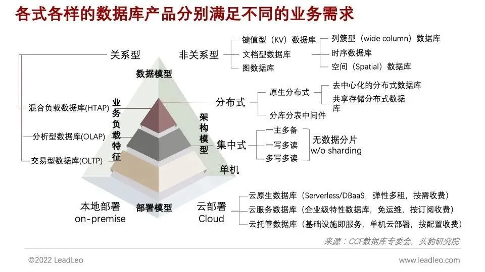
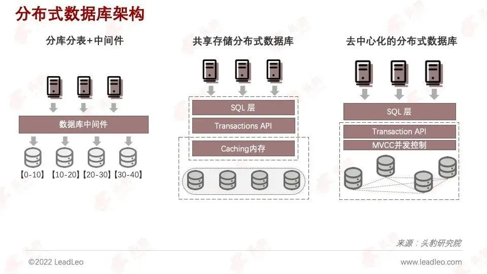
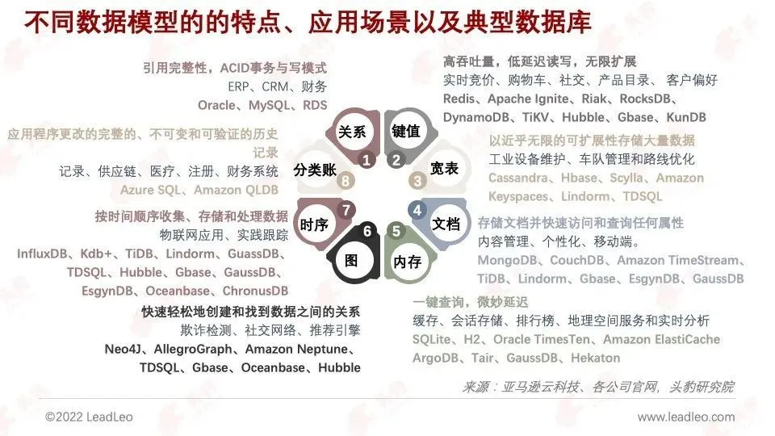
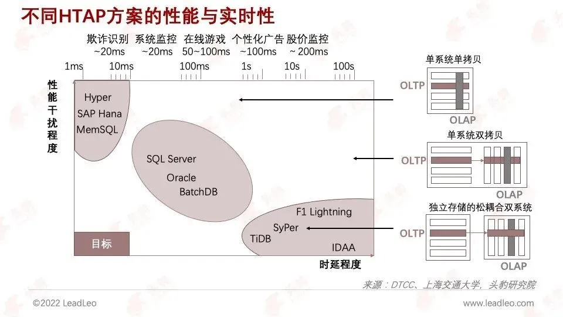
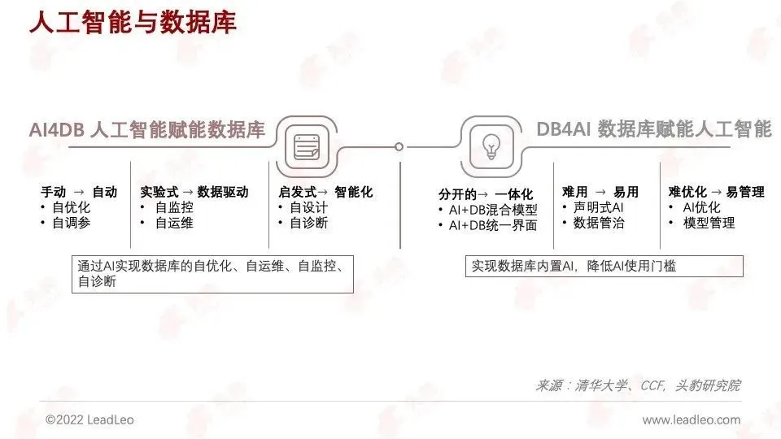
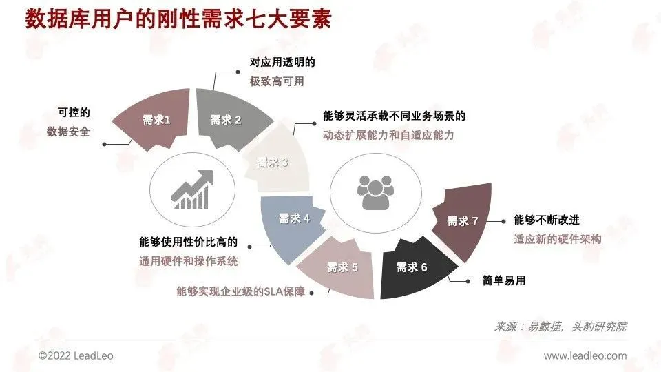
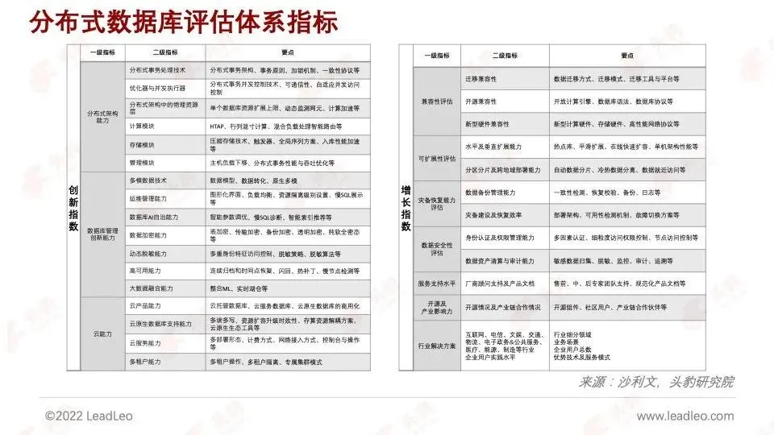

数字化转型场景大爆发，分布式数据库广泛替代政企数字基础设施
2021年第四季度，头豹研究院联合弗若斯特沙利文（Frost & Sullivan，简称“沙利文”）对分布式数据库领域核心产品进行了下游用户体验调查。受访者来自互联网、媒体、电信、交通、政府等多个领域，所在组织规模不一，细分领域有别。本市场报告提供的分布式数据库趋势分析亦反映出数据库行业整体的动向。
头豹研究院联合沙利文发布《2021年中国分布式数据库市场报告》，持续追踪数据库市场的竞争动向
”
头豹研究院联合沙利文发布《2021年中国分布式数据库市场报告》，该市场报告研究课题为2021年中国分布式数据库市场报告，以数据库领域分布式数据库产品为核心研究对象，研究周期为2021年全年。本研究项目将对数据库在互联网、电信、能源、交通、政务等领域的市场动向、前沿技术、企业需求、竞争态势等信息进行重点梳理，并从价值创造、技术发展维度出发对市场发展前景做出推测或预判。
同时，从分布式架构能力、数据库管理创新能力、云能力、兼容性、可扩展性、安全性、灾备能力、服务支持水平、开源及产业影响力、行业解决方案等多维度衡量业内企业2021年竞争综合实力。头豹研究院联合沙利文将持续关注中国分布式数据库市场，捕捉竞争动向。
数据库作为大多数信息系统的基础设施，向下发挥硬件算力，向上使能上层应用，各式各样的数据库产品分别满足不同的业务需求。数据库的速度、易用性、稳定性、扩展性、成本都对企业的基础业务与增长弹性至关重要
”
数据库已经经历了半个世纪的发展，经历了学术界驱动、商业化落地、论文工业实现、企业应用需求驱动等技术发展阶段。
从一开始的层面模型，网状模型，关系模型，到对象模型，对象关系模型，半结构化等，数据模型一直是数据库的核心和理论基础，而扎实的理论支撑和更佳的逻辑独立性仍然将是未来数据库的根本。
在商业化落地后，Oracle带着MySQL、微软的SQL Server等领衔关系型数据库占领市场多年。从SQL、NoSQL到NewSQL，甚至是HTAP，都在迭代中推动着业务能力的发展。
当前，云+分布式已经成为了企业极限需求的唯一解决方案，并造就了当前数据库行业的爆发期。在当前与持续的行业周期中，先进的产品与技术都需要围绕市场，才能成为最重要的竞争优势。

从专利申请的数据角度出发，中国的分布式数据库相关专利申请量从2012年的全球占比22%爬升至2021年的76%，中国已经成为了全球分布式数据库的技术创新中心
”
中国的分布式数据库相关专利申请量从2012年的全球占比22%爬升至2021年的76%，中国已经成为了全球分布式数据库的技术创新中心。
北京、广东和江苏三地聚集了较多的分布式数据库先进厂商，累计的分布式数据库专利申请量领先全国。
分布式数据库的创新建立在对数据库技术的研究与应用积累，而针对分布式数据库的关键板块包括分布式计算、负载均衡、控制系统、分布式存储等副主题的热度已经凸显。
中国数据库产业政策制定采取分散与集中结合型模式，具体政策是实现宏观政策目标的手段和措施,包括产权保护政策、需求引导政策、安全保密政策、鼓励开发政策、经营政策、国际合作交流政策、人才政策等
”
伴随数字经济建设速度的加快，政府对数据行业的发展重视程度逐渐提升，数据产业多层次政策体系逐渐完善。中国数据库产业政策制定采取分散与集中结合的模式，具体政策是实现宏观政策目标的手段和措施，其中包括了产权保护、需求引导、安全保密、人才政策等等，制定统一的行业标准和规范。
在数字化政府、数字化城市、国企数字化转型等场景集中规划，实施财政资助优先采用。并开放多元的数据产品开发，鼓励产销分离参与市场竞争，用市场需求原则调节，逐步实现自主可控和扩张输出。
软件应用的繁荣造就了数据库技术发展所需的多场景、多生态、多用户的市场环境；GitHub预计2030年中国成为全球最大开发者来源；2021年是中国数据库赛道投融资最活跃的一年，进一步催化中国数据库市场的高速增长
”
中国的分布式数据库发展环境
中国的人口基数、城镇化后的人口密度以及高度发展的经济行为构成了海量、高并发的数据环境属性，中国分布式数据库的发展取得了流量红利。
场景红利
互联网及移动互联网的流量环境造就了中国信息科技过去十年的快速发展，软件应用的繁荣造就了数据库技术发展所需的多场景、多生态、多用户的市场环境，给了数据库厂商充分的研发-实践-试错的市场环境。
在海量、高并发的数据环境中，分布式数据库赛道繁荣。不仅有传统集中式数据库厂商，还吸引了云厂商、初创型企业以及跨界的ICT企业。
人才红利
从Github的2021年度报告可见，美国以22.7%的比例占据全球最大开发者来源的位置，但相比2015年的30.4%有所下降。中国以755万开发者，占比9.76%，排名全球第二正快速追赶。GitHub预计2030年情况会发生逆转，中国成为全球最大开发者来源。
资本热度
2020年9月，Snowflake在纽约证券交易所上市，引领了数字基础设施的投资热潮。
据不完全统计，2021年获得新一轮融资的企业就多达20家，且完成千万级甚至上亿级融资数量在14轮以上。2021年是中国数据库赛道投融资最活跃的一年，且红杉、高瓴、腾讯、经纬、云启、明势等投资方都在数据库赛道深度关注并投资。资本对数据库企业的持续注资，进一步催化中国数据库市场的高速增长。
目前数据库分布式技术路线选择上，都是以解决数据容量扩展问题为首要目标，主流方案为分库分表中间件、原生分布式等，不同技术路线及产品各有优劣
”
分库分表+中间件
方案：下层的单机数据库提供存储和执行能力，在多个单机数据库上封装一层中间层补充分布式能力，以统一的数据分片规则管理分布在不同数据库节点的数据，并提供SQL解析，请求转发和结果合并的能力。
优势：可以利用现有开源数据库成熟稳定的产品功能，具备高性能、低成本、稳定性、用户门槛低，（能力上限低但下限高）。
劣势：Sharding拆分成本高、底层架构不具备分布式能力，中间件通讯及单体数据库功能受限存在扩展性瓶颈。
案例：GoldenDB、TDSQL MySQL版、GreatDB、HotDB、MogDB、GaiaDB-X、openGauss。
共享存储分布式数据库
方案：计算节点独立并且共享一个不带计算功能的存储集群(Shared-storage)，数据存储的底层是可动态扩容的分布式高性能存储，以存算分离架构，计算层和存储层都可以动态扩缩容，并且这些分布式数据库都会对网络以及存储层的优化来保证高可用和高性能。
优势：事务性能优、读写响应最快、最大程度提升写入容量限制。
劣势：架构可改造性低、依赖共享存储系统，移植性低。
案例：AWS Aurora、PolarDB、TDSQL-C、SequoiaDB-MySQL、GaussDB for MySQL、ArkDB。
去中心化的分布式数据库
方案：每个节点有独立的计算和存储功能并且节点之间不共享数据（Shared-nothing），为了平滑的扩缩容也采用了存算分离的架构，分布式集群的每个节点都是独立节点，通过multi-paxos或者multi-raft等共识算法来保证多副本的可用。
优势：架构解耦性高、高兼容性、高可移植部署性、强一致高可用。
劣势：具备较高的硬件要求、分布式事务锁机制，多写性能低。
案例：TiDB、Oceanbase、Google Spanner、Cockroach、Hubble。

数据库的异构多模态化已经成为主流，但值得注意的是多模的发展离不开单模数据库技术的成熟化，将单模能力下沉给垂直引擎成为多模的内置能力，在不同模型的处理效率上有所侧重倾斜
”
专用数据库
专用数据库路线的代表是亚马逊云科技，强调专库专用带来的极致扩展性和稳定性，在数据库选型工程实践中以“Purposed bult，Not all in database”作为架构理念，为数据库用户搭建最佳场景的实现。
多模态数据库
多模数据库是在关系型模型数据库的基础上通过扩展SQL支持多种数据模型，实现一库多用，从而降低对不同数据模型的管理、运维、开发的复杂度，易于使用。
但多模态的思路也有弊端，在同一数据类型的场景中，多模通用数据库相较于专用数据库，在存储成本和查询性能都有所不足。所以具体的数据库选型需要依据用户的使用场景决定。
多模数据库的发展
从用户的使用层面出发，在一个数据库中同时支持多模型，以更简单的数据库架构处理更多的不要求高性能的异构数据，大大提升了使用易用性、运维效率、存储成本。对不同数据类型采用统一的SQL访问接口，极大优化了数据库体验。
随着应用数据需求的多样化，单模数据库的技术成熟化，用户经常需要面对异构数据的分析。每一个应用都需要开发数据中间层来对接多种数据库，去处理模型转换、数据分发、数据同步、查询合并等一系列问题。
当大数据量在关系型，其它数据类型的分析频次不高时，一个能够面向上层的业务逻辑提供统一存储、统一访问并保证数据正确的异构多模数据库系统成为了共性需求。另外，HTAP也正是这个需求的延伸概念。

随着业务系统接入的数据源及业务复杂性的不断增加，混合负载的需求越发普遍，数据库技术正在导向多源异构、高实时并发、多SQL标准接口的方向
”
HTAP保证一定的实时性能的同时也能充分提升响应速度、吞吐量、并发访问量、事务大小、数据访问量及索引规模，为以下两个场景带来了业务与架构的创新和提升：
数据密集型业务
将分析能力内嵌进传统的OLTP业务系统。物联网、医疗、风控、个性化推荐营销等数据密集型业务可以在交易侧完成实时的分析，且不会影响交易的性能与数据一致性。
以“用”为核心的实时数据服务平台
在现有的数据平台以“用”为核心，以“管”为基础的数据中台，将成为企业数字化规划与实施的重点创新与升级。让全企业用户能自由选择与应用数据资产，实时变现数据红利。

未来的数据库技术要充分满足人工智能对数据管理的需求，得从人工智能的角度，重新定义和设计数据库，从数据模型、数据操作模型、执行优化引擎等层面
”
数据库的治理是保障数据库安全可控的重要方式。随着业务信息化的发展，数据库面对的数据规模及复杂度井喷式增长，传统的基于经验的数据库优化工具已不能满足负载调优等高性能要求，需要基于学习的数据库优化工具：AI4DB。
数据库治理模式亟需基于云平台的操作自动化与基于AI的自动的调参优化、由数据驱动的自监控自运维、智能化自诊断自设计，来减轻甚至取消对DBA的依赖，使得数据库更加智能，更好适应不同场景。

云计算的蓬勃发展促使各种IT应用转向了云端，而云服务独有的按需服务的灵活性与按需计费或按配置计费的低成本性更是与数据库用户深度匹配。
”
数据库上云，起初借助基础设施即服务（IaaS），直接将传统数据库托管在云上，关系型数据库服务（RDS）就是这样的产品。而RDS这类方案，在迁移上云的过程需要对性能和事务作出妥协，存在资源利用率低、维护成本高、可用性低等问题。
于是，相比于迁移数据库上云，在云上建设数据库服务，设计出以基础云先行，从应用、中间件、数据库服务全线适应云特点的云原生数据库尤为重要。
分布式数据库技术发展应与需求紧密结合
”
分布式数据库技术的发展需要满足时代和市场的需求，回归数据库用户的刚性需求。目前的分布式数据库需要在各个维度上达到集中式架构产品的水平从而在各个场景上发挥其性能及成本优势，渗透进各行各业。

中国分布式数据库市场处于稳步增长期，竞争主体将根据其在创新能力及增长能力两个维度的表现划分梯队
”
综上，纵观2021年分布式数据库行业的发展概况，中国分布式数据库市场发展处于稳步增长期。本报告分别通过市场增长指数与创新指数两大主要维度衡量业内优秀厂商竞争实力。增长指数衡量竞争主体在分布式数据库基础及性能水平、服务及生态水平、行业解决方案积累水平等维度的竞争力，而创新指数则衡量性能分布式架构能力、数据库管理创新能力、云能力。
